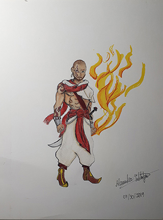
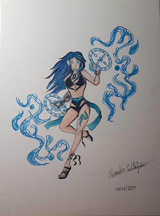

Behind The Creation
What is the Artstyle
The style of art that's used for the creation of this project is a combination of both the traditional and digital artstyle with inspiration based heavily around both the manga and comic book artstyle with a hint of inspiration from the style when creating graphic novels.
Artwork
These are just some of the illustrations concepts for some of the characters in the world of "Elementals".

Fire Elemental
A look at what the Fire Elemental would look like in its human form. Inspired by Middle-Eastern warriors, the red sache complimets the baggy pants along with the point-tipped shoes. The curved blade and tatoos further implements that the Fire Elemental is a fearsome warrior.

Water Elemental
A look at what the Water Elemental would look like in its human form. Inspired by a lovely sorceress enjoying a day at the beach, the blue sache complimets the black swimsuit along with the silver gauntlet on her right arm as well as the lovely blue flower in her hair. The magic circles whith ancient runes within them further implements that the Water Elemental is a master in the mystic arts.

Earth Elemental
A look at what the Earth Elemental would look like in its human form. Inspired by Military trainers and MMA fighters, the dark green clothing ensemble complimets the rocky leg guards and fingerless gloves along with the bandage on its left arm which indictaes that hes a veteran fighter. The tough persona that he demonstrates further implements that the Earth Elemental has a sense of honour and excepts no excuses during training.
Wind Elemental
A look at what the Wind Elemental would look like in its human form. Inspired by Belly Dancers and Martial Artist, the green crop top and shorts complimets the crimson sache and transparent arm and leg sleeves along with the silver headband and large ponytail. The dual chakrams show that the Wind Elemental is not only a gracefull dancer witha carefree spirit, but also a skilled and great warrior with control over the wind.

Light Elemental
A look at what the Light Elemental would look like in its human form. Inspired by veteran warriors, the chainmail armour complimets the grey tunic along with the simple yellow accents. The long beard, scared left eye and bo-staff further reveals that the Light Elemental is a wise warrior who will mentor the next generation of fighters.
Dark Elemental
A look at what the Dark Elemental would look like in its human form. Inspired by the classic adventurer, rogue/asailant/assassin warriors, dark elf-human hybrid, the dark blue short dress and violet cloak complimets the brown leather boots, armour and belts along with the silver armour on her arms, legs and chest. The elegant khopesh and blue face paint further reminds us that the Dark Elemental is as mysterious as the dark side of the moon and as deadly as the shadows.